插件与创意工坊
在「发现」打开创意工坊。

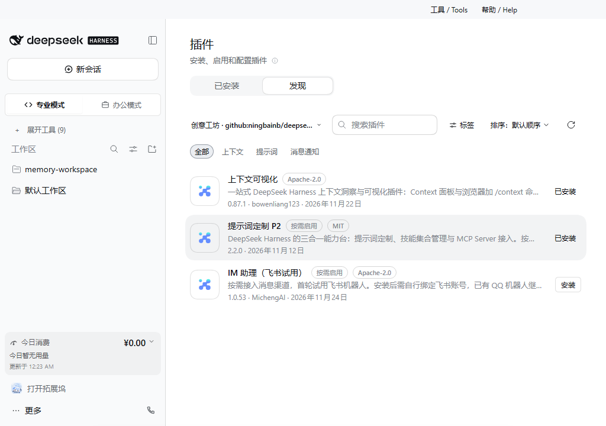
开源 AI 桌面工作台
基于官方 DSH，集中管理会话、项目和工具。
开源免费 489 Stars 42,521 次累计安装包下载（GitHub） 在 GitHub 支持项目
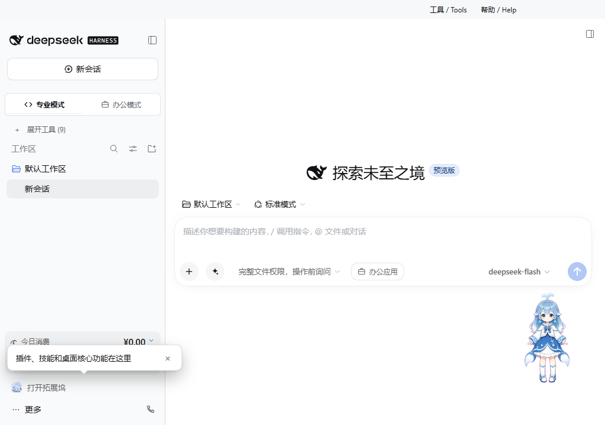
5.5.0 正式版
在「发现」打开创意工坊。

查看、确认和删除本地记忆。
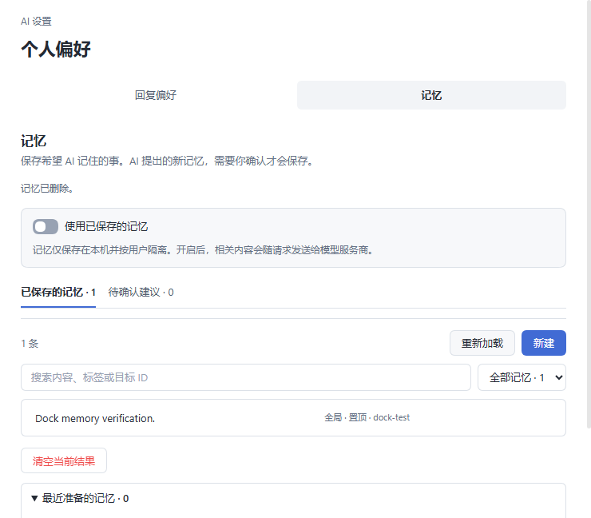
社区维护，使用独立的桌面数据目录和更新通道。
沿用官方 Web UI，集成 DSH。
管理窗口、托盘、恢复和更新。
按需启用任务看板、远程连接与主题。
插件、技能、外观和设置集中在左侧，支持搜索。
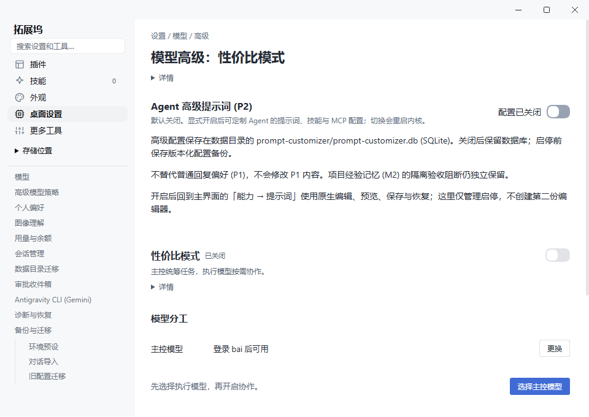
跟随主题切换，沿用同一套设置导航。
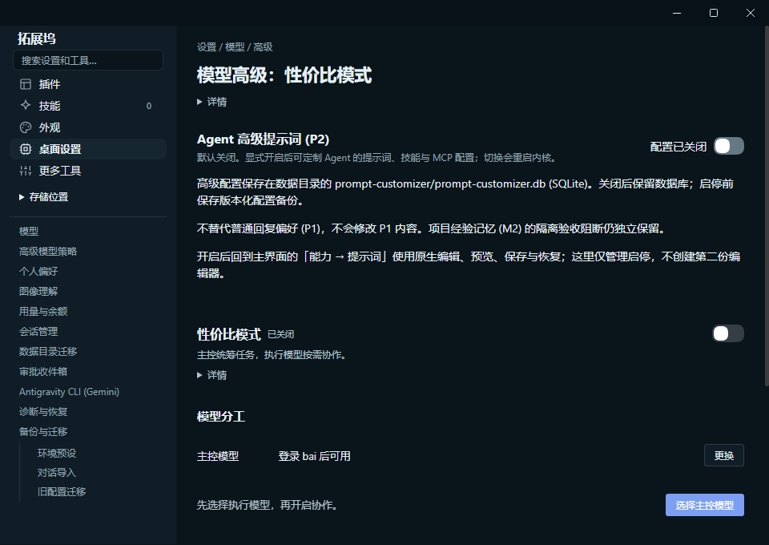
左侧找项目和会话，常用工具从拓展坞打开。
按习惯显示文件、变更和任务等面板。
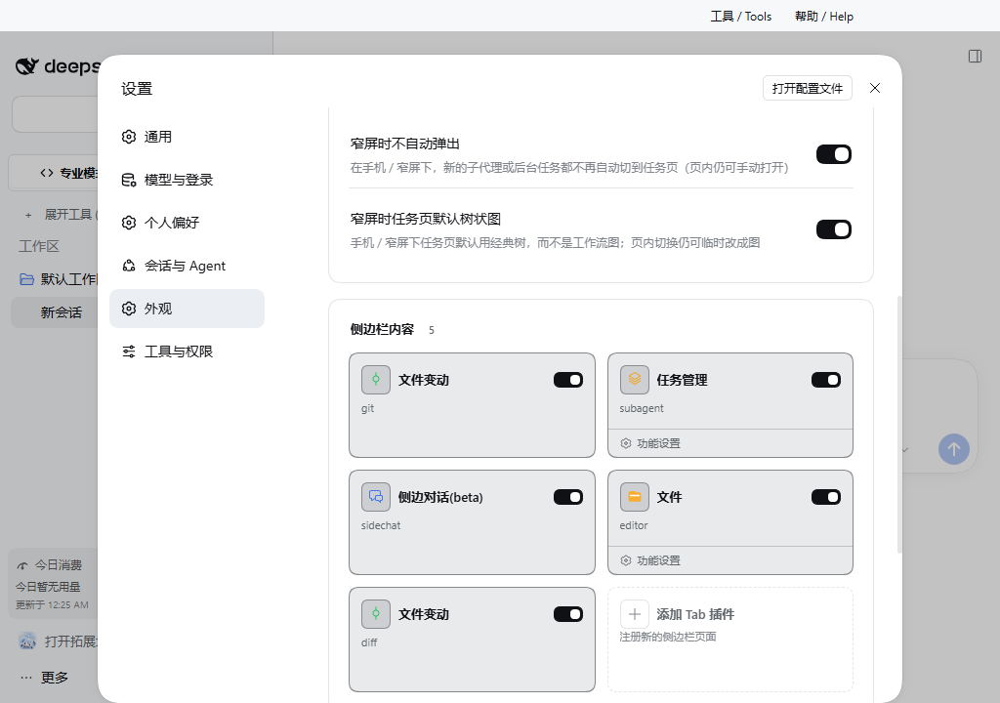
在「更多工具」按需启用。点击、输入等操作需审批。
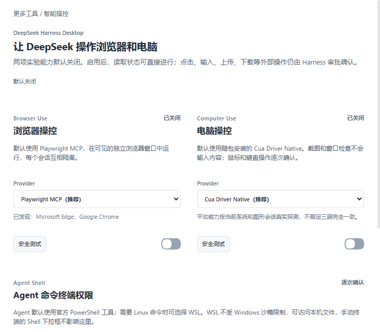
在会话中管理团队，在高级模型设置中调整性价比模式。
从输入框搜索并插入技能，在技能中心查看来源和启用状态。
支持本地导入。首次启用技能市场需确认执行权限。
直接登录 bai 同步模型，也可连接其他供应商。
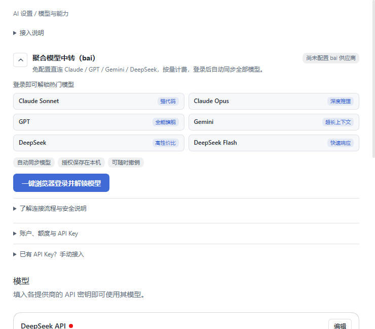
查看 Token 用量、缓存节省和用量趋势。
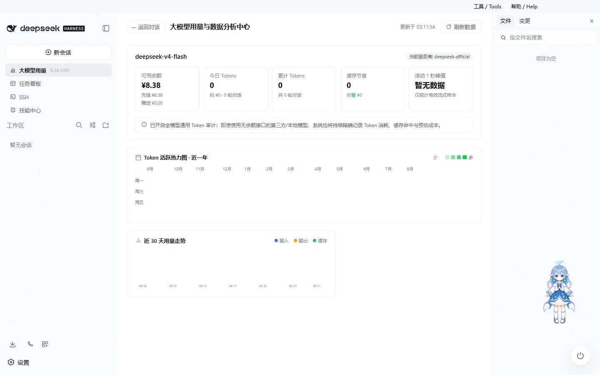
预览项目和历史会话，确认后再导入。
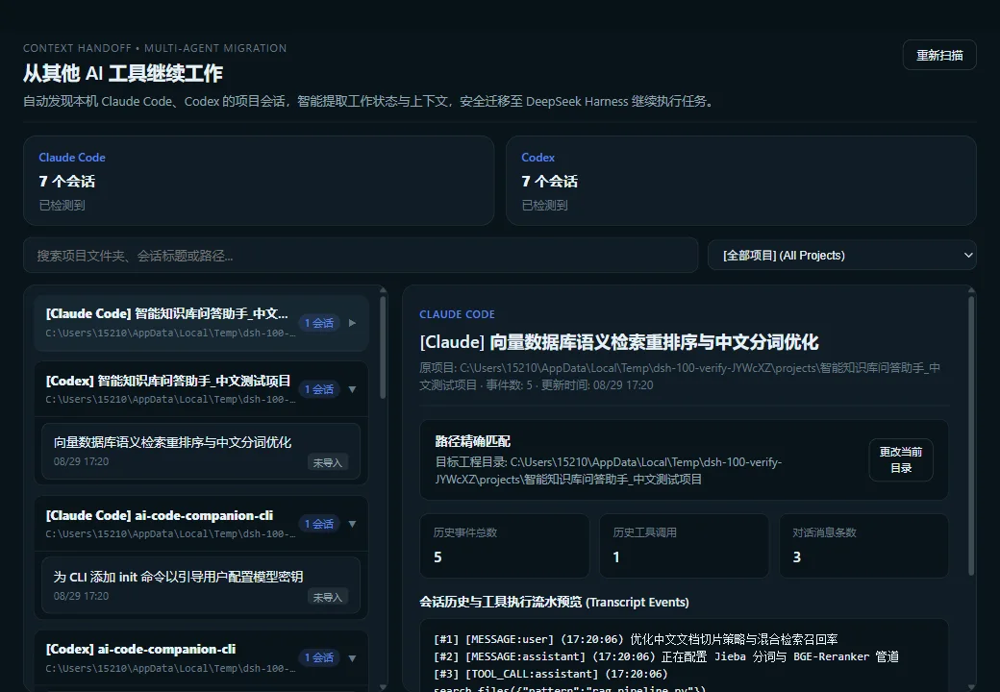
在会话旁查看项目文件和变更，从拓展坞打开任务看板和 SSH。
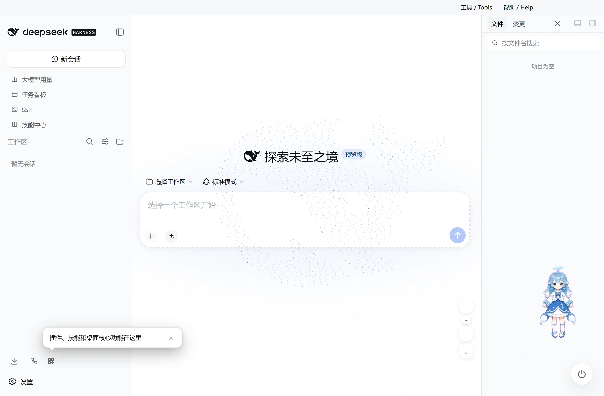
15 款离线主题，先预览再应用。

扫码配对后，用手机继续会话。支持局域网和公网隧道。


Windows 10 / 11 x64，内置运行组件。
$DeepSeek Harness Desktop v5.5.0下载
Apple Silicon，需 macOS 13+。未签名、未公证。
$Desktop v5.5.0 macOS下载 DMG
通过 Ubuntu 22.04 原生验证。
$Desktop v5.5.0 Linux下载 DEB
新增原生办公模式与通用 ACP v1 适配，完善插件归属和更新选路。
文件成为工作区附件，模型按需读取。只有支持的格式可以解析。
模型建议经确认后保存。启用引用时，相关记忆随请求发给当前模型供应商。
下载新版安装包覆盖安装，保留原有会话和配置。
基于官方 DSH 的社区开源桌面工作台，集中管理会话、项目、插件和本地记忆。
不需要。Windows x64 安装包已经包含运行所需组件，下载并安装后即可启动。
是。安装包可以免费下载，源代码托管在 GitHub，并采用 BSD-3-Clause 许可证。
在高级模型设置中选择主控、执行模型和策略。主控负责规划和交付，执行模型处理派发的任务。
可以。桌面版支持只读扫描 Claude Code 与 Codex 的项目和历史会话，用户预览并确认后导入 Harness 工作区；历史工具调用不会重新执行，敏感内容会先脱敏。
生成速度按严格滚动 1 秒窗口统计，同毫秒流式批次先合并，usage 汇总只修正账单 Token；没有有效流式样本时不显示虚假的 TPS。
Windows 10/11 x64 为正式版；macOS 13+ Apple Silicon arm64 与 Linux x64 为 Preview，Linux 本版仅 Ubuntu 22.04 原生 Runner 验证。
不是。它是社区维护的开源桌面发行版，使用公开的官方 @deepseek-ai/dsh Runtime 与 SDK，但拥有独立应用 ID、数据目录、协议和更新源；DeepSeek Harness 与相关标识归各自权利人所有。
可以。桌面版使用隔离的 profiles/desktop profile；首选端口被占用时会自动选择可用端口，不覆盖官方 Web 端配置。
用同版本的 SHA256SUMS.txt 校验安装包，在 release-manifest.json 查看签名。